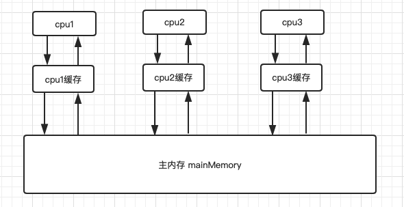
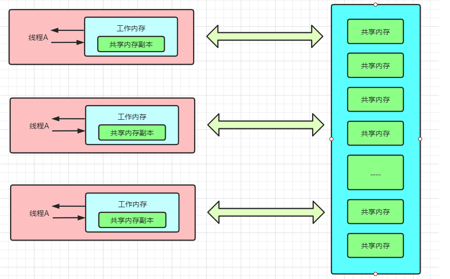

JMM java内存模型
一、现代计算机内存模型
早期的计算机中由于CPU和内存的速度是差不多的，所以CPU是直接访问内存地址的。
而在现代计算机中，CPU指令的运行速度远远超过了内存数据的读写速度，为了降低这两者间这高达几个数量级的差距，所以在CPU与主内存之间加入了CPU高速缓存。
高速缓存可以很好地解决CPU与主内存之间的速度差距，但CPU缓存并不是所有CPU共享的，因此产生了一个新的问题：数据一致性问题。

二、缓存一致性协议（MESI）
MESI四种状态
因为存在多个cpu，也就存在多个cpu缓存，CPU缓存的一致性问题会导致并发处理的不同步。
所以引入一种解决办法：缓存一致性协议（MESI）
MESI 这个名称本身是由：Modified（修改）、Exclusive（独享）、Shared（共享）、Invalid（无效）。
这个四个单词也代表了缓存协议中对缓存行（即Cache Line，缓存存储数据的单元）声明的四种状态，用2 bit表示，它们所代表的含义如下所示
状态 ｜ 描述 ｜ 监听任务
Modified（修改 ｜ 这行数据有效，数据被修改了，和内存种的数据不一致，数据只存在于本Cache中 ｜ 缓存行必须时刻监听所有试图读该缓存行相对就主存的操作，这种操作必须在缓存将该缓存行写回主存并将状态变成S（共享）状态之前被延迟执行。
Exclusive（独享）｜ 这行数据有效，数据和内存中的数据一致，数据只存在于本Cache中 ｜ 缓存行也必须监听其它缓存读主存中该缓存行的操作，一旦有这种操作，该缓存行需要变成S（共享）状态。
S共享（Shared ｜ 这行数据有效，数据和内存中的数据一致，数据存在于很多Cache中 ｜ 缓存行也必须监听其它缓存使该缓存行无效或者独享该缓存行的请求，并将该缓存行变成无效（Invalid）。
I无效（Invalid） ｜ 这行数据无效 ｜ 无
理解： 某数据如果多个缓存读取，则处于S共享状态，如果只是单个则处于E独享状态。
某个CPU2对CPU2缓存中某数据作出修改，则CPU2缓存该数据处于Modified状态，如果该数据是S共享状态，则其他缓存该行数据变成I无效状态。
如何保证缓存一致性
在多处理器下，为了保证各个处理器的缓存是一致的，就会实现缓存一致性协议，
每个处理器通过嗅探在总线上传播的数据来检查自己缓存中的值是不是过期了，当处理器发现自己缓存行对应的内存地址被修改，
就会将当前处理器的缓存行设置为无效状态，当处理器对这个数据进行修改操作的时候，会重新从系统内存中把数据读到处理器缓存里。
三、JMM java 内存模型

线程之间的共享变量存储在主内存（Main Memory）中，每个线程都有一个私有的本地工作内存（Local Memory），工作内存中存储了线程以读/写共享变量的副本。
（本地工作内存是 JMM 的一个抽象概念，并不真实存在，线程中所谓工作内存其实还是存在于主内存中的。）
Java内存模型与现代计算机内存模型区分
Java内存模型和现代计算机内存模型都需要解决一致性问题，但是这个一致性问题在现代计算机内存模型中指代的是缓存一致性问题，MESI协议所设计的目的也是为了解决这个问题。而在Java内存模型中，这个一致性问题则是指代内存一致性问题。两者之间有一定区别。
缓存一致性
计算机数据需要经过内存、计算机缓存再到寄存器，计算机缓存一致性是指硬件层面的问题，指的是由于多核计算机中有多套缓存，各个缓存之间的数据不一致问题。缓存一致性协议（如MESI）就是用来解决多个缓存副本之间的数据一致性问题。
内存一致性
线程的数据则是放在内存中，共享副本也是，内存一致性保证的是多线程程序并发时的数据一致性问题。我们常见的volatile、synchronized关键字就是用来解决内存一致性问题。这里屏蔽了计算机硬件问题，
主要解决原子性、可见性和有序性问题。
至于内存一致性与缓存一致性问题之间的关系，就是实现内存一致性时需要利用到底层的缓存一致性（之后的volatile关键字会涉及）。
四、并发编程的特性
首先我们要先了解并发编程的三大特性：原子性，可见性，有序性；
原子性
原子性是指一个操作是不可间断的，即使是多个线程同时执行，该操作也不会被其他线程所干扰。
既操作的连续性1
int x = 10; // 具有原子性，赋值
i++;
不具备原子性因为i++juyou多部操作
1、读取 i 的值到内存空间
2、i + 1
3、刷新结果到内存
多个具备原子性操作放在一起并不具备原子性
y=x
先读取x的值到内存空间 x = 10； 这一步具备原子性
在给y赋值 y = 10; 也一步也具备原子性
但y=x不具备原子性
可见性
内存可见性（Memory visibility）是指当某个线程正在使用对象状态而同时另一个线程正在修改该状态，此时需要确保当一个线程修改了对象状态后，其他线程能够看到发生的状态变化。
每个线程都有一个私有的本地工作内存并存储了线程间读/写的共享副本。
如果某个线程对这个副本中值进行修改，却没有对主内存进行同步，则会导致其他线程访问过时的数据。
使用volatile关键字就可以保证数据在不同线程副本的可见性，当有线程在副本中进行修改，就会强制修改主内存中值，同步到其他线程的副本中。
保证所有线程访问到值都为最新值
有序性
有序性即程序按照我们代码所书写的那样，按其先后顺序执行。第一次接触这个特性可能会有所疑惑，所以在了解有序性之前我们需要来了解执行重排序以及相关概念。
指令重排序
为了提高性能，编译器和处理器会对程序的指令做重排序操作，重排序分为3种类型：
- 编译器优化的重排序：属于编译器重排序，编译器在不改变单线程程序语义的前提下，可以重新安排语句的执行顺序；
- 指令级并行的重排序：属于处理器重排序，现代处理器采用指令级并行技术来将多条指令重叠执行。如果不存在数据依赖，处理器可以改变语句对应机器指令的执行顺序；
- 内存系统的重排序：处于处理器重排序由于处理器使用缓存和读/写缓冲区，这使得加载和存储操作看上去可能是在乱序执行
指令重排序对于程序执行有利有弊，我们并不是要去完全禁止它。
对于编译器重排序，JMM的编译器重排序规则会禁止特定类型的编译器重排序。
对于处理器重排序，JMM的处理器重排序规则会要求Java编译器在生成指令序列时，插入特定类型个的内存屏障指令，通过内存屏障指令来禁止特定的处理器重排序。
as-if-serial
不管如何重排序，要保证程序运行的结果保持不变，编译器、runtime和处理器都必须遵循as-if-serial语义。
为了遵守as-if-serial语义，编译器和处理器不会对存在数据依赖关系的操作做重排序。
例如1
2
3int x = 10; // 1
int y = 20; // 2
int a = x + y; // 3
明显第3行依赖于第2行、第1行，所以第三行不会重排序，而第1行、第2行可能会被重排序。
happens-before
如果说 as-if-serial 是 JMM 提供用来解决单线程间的内存可见性问题的话，那么 happens-before 就是JMM向程序员提供的可跨越线程的内存可见性保证。
具体表现为：如果线程A的写操作a与线程B的读操作b之间具有 happens-before 关系，那么JMM将保证这个操作a对操作b可见。
此外，happens-before 还有传递关系，表现为：a happens-before b，b happens-before c，那么a happens-before c。
注意：两个操作之间存在happens-before关系，并不意味着一个操作必须要在后一个操作之前执行，只要求前一个操作执行的结果对后一个操作可见。
如果重排序之后的执行结果，与按happens-before关系来执行的结果一致，那么这种重排序并不违法（也就是说，JMM允许这种重排序）。
比对 happens-before 与 as-if-serial。
1、as-if-serial语义保证单线程内程序的执行结果不被改变，happens-before关系保证正确同步的多线程程序的执行结果不被改变。
2、as-if-serial语义给编写单线程程序的程序员创造了一个幻境：单线程程序是按程序的顺序来执行的。happens-before关系给编写正确同步的多线程程序的程序员创造了一个幻境：正确同步的多线程程序是按 happens-before 指定的顺序来执行的。
3、as-if-serial 语义和 happens-before 这么做的目的，都是为了在不改变程序执行结果的前提下，尽可能地提高程序执行的并行度。